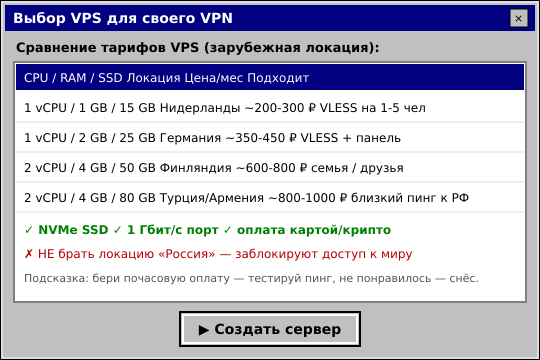

VPS ДЛЯ VPN★彡 КАКОЙ СЕРВЕР КУПИТЬ 2026 彡★
Как выбрать VPS для своего VPN или прокси в 2026: локации, бюджеты, требования, на что смотреть и где не блокируют 


ЧТО ТАКОЕ VPS И ЗАЧЕМ ОНVPS (виртуальный сервер) — это арендованный кусочек сервера в дата-центре, на который ты ставишь свой VPN (VLESS, MTProto, AmneziaWG). Главное правило 2026: локация НЕ в России — иначе сервер сам под ограничениями и не откроет тебе мир. Разберём, что брать под разные задачи и бюджеты. 

ПОШАГОВАЯ ИНСТРУКЦИЯ1 Выбери локацию (страну сервера) От локации зависит пинг и стабильность. Для РФ лучший баланс — Европа и соседние страны.
2 Определи мощность под задачу VLESS почти не ест ресурсы. Смотри на RAM и канал, а не на CPU.
 3 Проверь способ оплаты Из России оплата зарубежных VPS — главная сложность. Ищи провайдеров с картой РФ, криптой или СБП.
4 Возьми почасовой тариф и протестируй пинг Перед месячной оплатой создай сервер на час, проверь пинг и скорость до него из РФ. Не понравилось — удаляешь, теряешь копейки. # проверить пинг до сервера (с компа в РФ) ping ТВОЙ_IP # проверить скорость канала на сервере apt install speedtest-cli && speedtest 5 Поставь VPN на сервер После выбора VPS — ставь VLESS Reality через панель 3X-UI (проще всего) или вручную через Xray. См. наши гайды.

СКОЛЬКО СТОИТ VPS ПОД VPN
Считай не только аренду VPS, но и своё время на настройку и поддержку. Часто готовый VPN выходит выгоднее.

Свой сервер — это VPS за деньги каждый месяц, обновления, починка после блокировок и возня с конфигами. Если нужен просто рабочий интернет без головной боли — возьми готовое: Промокод VNESPISKA = −20% ★ дешевле, чем платить за VPS 
|